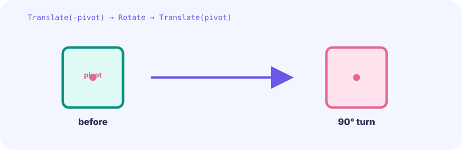

A two-dimensional box
A 7×6 array remembers type numbers in the same arrangement as the screen. board[2][4] is row three, column five.
var board [7][6]int★★☆☆☆ / PLAYABLE
Store a board as rows and columns, then swap only two cells sharing an edge.
FIRST-TIME READER
Find where this one line is used, then follow how its value changes on screen. This is the shared game-state boundary: add rules in Update, then choose any independent renderer in Draw. The numbered steps below add one system at a time.
ONE RULE TO TRACE
Match the explanation to this line, then test the change in the game.
adjacent := abs(ax-bx)+abs(ay-by)==1ONE GAME, OPEN-ENDED PRESENTATION
Update and the game struct own the facts of the game. The views below observe the same autoplaying position, box, and goal at the same time. Only Draw differs, and these views can be replaced by any other presentation.


PLAYABLE / WEBASSEMBLY
Tap the first and second piece. Diagonal and distant cells are rejected. Mouse clicks work on PC.
DEEP DIVE / GRID & ADJACENCY
Store pieces in board[row][column]. Subtract the board's top-left from a tap and divide by cell size to get integer coordinates.
A 7×6 array remembers type numbers in the same arrangement as the screen. board[2][4] is row three, column five.
var board [7][6]intSubtract the board origin and divide by 64. Dropping the fraction maps every point inside a cell to one number.
col := (x - originX) / cellSizeAdd the absolute row and column differences. One means up, down, left, or right; two means diagonal or farther.
abs(ax-bx) + abs(ay-by) == 1TRY IT / CELL HIT TEST
Move the rectangle and observe overlap. The game also treats each board cell as an equal rectangle for taps.
TRY IT · GO
atk := Rect{x, y, w, h} // active only hurt := Rect{ox, oy, ow, oh} if overlaps(atk, hurt) { applyHit() }
—
IN THE REAL GAME
If the Manhattan distance is one, Go's multiple assignment exchanges both values.
distance := abs(a.x-b.x) + abs(a.y-b.y)
if distance == 1 {
board[a.y][a.x], board[b.y][b.x] =
board[b.y][b.x], board[a.y][a.x]
}WHY ROW & COL?
The next step can inspect one row left-to-right and one column top-to-bottom.
WHY ADJACENT?
Because any two cells cannot swap, players must plan how to form a line.
TRY NEXT
Remember the pressed cell and swap when the release cell is adjacent.
FEEDBACK